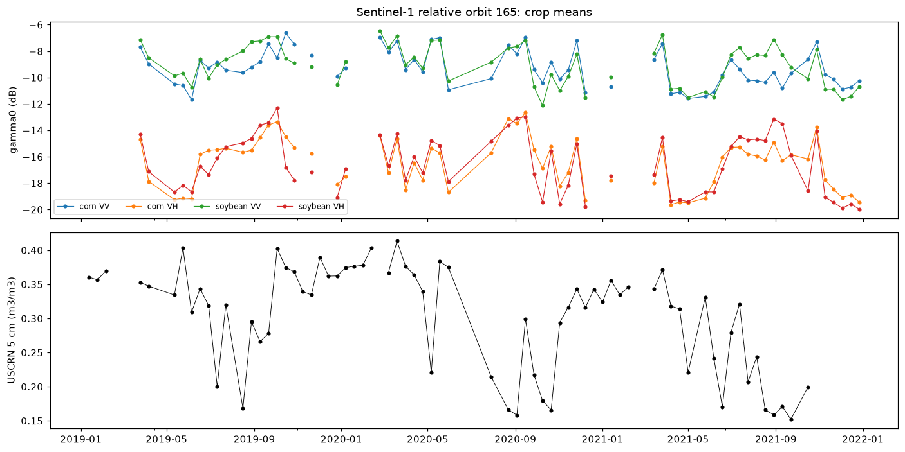

Radiometers see soil moisture well but only at tens of kilometres. Synthetic aperture radar (SAR) resolves individual fields, at the price of a signal that also depends strongly on roughness, vegetation structure and viewing geometry. Before any retrieval the backscatter must be calibrated, terrain corrected, filtered for speckle and kept in a consistent geometry, and pixels where soil moisture cannot be retrieved (water, towns, steep slopes, frozen ground) must be masked. This notebook builds that analysis-ready cube for central Iowa from Sentinel-1 radiometrically terrain corrected (RTC) backscatter, 2019 to 2021, and shows why each step matters.
Overview
From raw data to gamma0 RTC
Step
What it does
GRD (Ground Range Detected)
amplitude images in radar geometry, multilooked to about 20 m
Orbit correction
precise orbit files fix the geolocation
Thermal noise removal
subtracts the receiver noise, important for low VH backscatter
Radiometric calibration
DN to sigma0 (per unit ground area) or beta0 (per unit slant area)
Terrain flattening
divides by the illuminated area from a DEM: gamma0 RTC (Small 2011)
Geocoding
projects to map coordinates (UTM)
Speckle filtering
reduces the multiplicative noise of coherent imaging
Planetary Computer’s sentinel-1-rtc collection provides gamma0 RTC at 10 m for every Sentinel-1 IW scene over land, produced with the GAMMA software; ASF’s OPERA RTC-S1 and Earth Engine’s COPERNICUS/S1_GRD are alternatives. GeoLattice can also process GRD itself (geolattice.rsense.sar.process_grd).
Geometry: one relative orbit
Backscatter depends on the incidence angle (about 30 to 46 degrees across the IW swath) and on the look direction. Over Iowa each place is seen from two ascending relative orbits (63 and 165) at different angles. Keeping one relative orbit keeps the geometry of every pixel constant in time, so temporal changes reflect the surface, not the viewing angle. Mixing orbits requires an incidence angle normalization (sm.normalize_incidence).
Speckle
SAR images are the coherent sum of many scatterers in each pixel, which produces a granular, multiplicative noise with an equivalent number of looks (ENL) of about 4 for GRD. Spatial filters (boxcar, Lee, refined Lee) blur field boundaries; the multitemporal filter of Quegan and Yu (2001) uses the time series to reduce speckle while keeping spatial detail.
VV, VH and soil moisture
Co-polarized VV backscatter is dominated by surface scattering from the soil and responds most to soil moisture; cross-polarized VH comes mainly from volume scattering in vegetation and tracks biomass. Their ratio (VH/VV, or VH minus VV in dB) is a common vegetation descriptor for retrievals.
Sentinel-1 with GeoLattice
Function
Purpose
sm.s1_soil_moisture_cube (through sd.s1_cube)
RTC VV and VH in dB for one relative orbit, multitemporal speckle filter
geolattice.rsense.access.stac_search, stac_load
catalogue search and loading
geolattice.rsense.sar.speckle
boxcar, Lee, refined Lee and multitemporal filters
sm.sar_masks
water, urban, steep slopes and frozen dates
sm.normalize_incidence
normalize backscatter to a reference angle
Learning objectives
Find and load Sentinel-1 RTC scenes for an AOI and choose one relative orbit.
See the effect of mixing orbits and of speckle filtering.
Build water, urban, slope and frozen-soil masks.
Read VV and VH time series over corn and soybean fields and relate them to soil and vegetation.
Data
Dataset
Content
Sentinel-1 RTC (Planetary Computer sentinel-1-rtc), 2019 to 2021
gamma0 VV and VH, 50 m in UTM 15N, 93.9 W to 93.2 W, 41.5 N to 42.2 N
Copernicus DEM GLO-30, ESA WorldCover 2021, USDA CDL 2019 to 2021
elevation, land cover, crop types on the same grid
USCRN Des Moines 17 E
air and soil temperature for frozen dates, soil moisture
Contents
Setup
The scenes and their geometry
Why one relative orbit
Speckle filtering
Masks
VV and VH over corn and soybean
Summary and exercises
Setup
Code
import warnings # warning controlwarnings.filterwarnings("ignore") # hide routine library warningsfrom pathlib import Path # file pathsimport matplotlib.pyplot as plt # figuresimport numpy as np # arraysimport pandas as pd # tablesimport rioxarray # noqa: F401 (registers the .rio accessor)import xarray as xr # labelled rastersimport geolattice # GeoLatticeimport geolattice.rsense.soil_moisture as sm # soil moisture physics, products, retrieval and validationimport sm_data as sd # chapter helper: subsets, downloads and caches the dataplt.rcParams.update({"figure.dpi": 110}) # figure resolutionOUT = Path("outputs") # results written by this chapterOUT.mkdir(exist_ok=True) # create it if neededprint("GeoLattice", geolattice.__version__, "| data folder", sd.DATA.relative_to(sd.DATA.parents[3])) # versions and pathsfrom collections import Counter # counting orbitsfrom geolattice.rsense.access import stac_search # STAC searchs1 = sd.s1_cube() # cached RTC cube, one relative orbit, multitemporal filter, dBstat = sd.static_layers() # DEM, WorldCover and CDL on the same gridprint(s1.sizes, "| relative orbit", s1.attrs["relative_orbit"], s1.attrs["orbit_state"]) # dimensions and geometry
items =list(stac_search("sentinel-1-rtc", aoi=sd.IOWA_SAR, dates="2019-01-01/2021-12-31")) # all scenes over the AOIcat = pd.DataFrame([{"time": pd.Timestamp(i.properties["datetime"]).tz_localize(None), "orbit": i.properties["sat:relative_orbit"],"state": i.properties["sat:orbit_state"], "platform": i.properties.get("platform")} for i in items]) # cataloguedisplay(cat.groupby(["orbit", "state", "platform"]).size().rename("scenes").to_frame()) # scenes per orbit and satelliteper_year = cat.groupby([cat.time.dt.year, "orbit"]).size().unstack() # per yeardisplay(per_year) # acquisitionsprint(f"cube dates: {s1.sizes['time']}, median revisit {np.median(np.diff(s1.time.values).astype('timedelta64[D]').astype(int))} days") # revisit
scenes
orbit
state
platform
63
ascending
SENTINEL-1A
89
165
ascending
SENTINEL-1A
156
orbit
63
165
time
2019
29
52
2020
30
49
2021
30
55
cube dates: 79, median revisit 12.0 days
Over central Iowa only Sentinel-1A acquired data in 2019 to 2021 (Sentinel-1B did not cover this area), on two ascending relative orbits; orbit 165 has more scenes because two frames cover the AOI. The cube keeps orbit 165: 79 dates in three years, one every 12 days.
Why one relative orbit
The same fields seen from the two orbits on nearby dates differ systematically, because the incidence angle and the look direction differ.
Code
from geolattice.rsense.access import stac_load # loadingother =63if s1.attrs["relative_orbit"] ==165else165# the second orbitpick = cat[(cat.time.dt.year ==2020) & (cat.time.dt.month.isin([6, 7]))] # a few summer scenes of both orbitssub = [i for i in items if pd.Timestamp(i.properties["datetime"]).tz_localize(None) inset(pick.time)] # their itemsraw = stac_load(sub, bands=["vv"], aoi=sd.IOWA_SAR, crs=s1.rio.crs, resolution=50, chunks={"x": 1024, "y": 1024}).load() # gamma0, linearraw_db =10* np.log10(raw.vv.where(raw.vv >0)) # dBorb = xr.DataArray([dict(zip(pick.time, pick.orbit)).get(pd.Timestamp(t), np.nan) for t in raw.time.values], dims="time") # orbit of each datemean_by_orbit = {o: float(raw_db.where(orb == o).mean()) for o in (s1.attrs["relative_orbit"], other)} # scene mean per orbitprint({f"orbit {k}": round(v, 2) for k, v in mean_by_orbit.items()}, "dB mean VV, June to July 2020") # systematic difference
{'orbit 165': -9.62, 'orbit 63': -10.2} dB mean VV, June to July 2020
The two orbits differ by about 0.6 dB on average over the same fields and weeks, comparable with the change that a few hundredths of m3 m-3 of soil moisture produces. Mixing them without normalization would add a geometry-driven zigzag to every time series.
Speckle filtering
Code
from geolattice.rsense.sar import speckle # filtersone = raw.vv.isel(time=0) # one unfiltered scene (linear)win =dict(x=slice(int(one.sizes["x"] *0.4), int(one.sizes["x"] *0.4) +200), y=slice(int(one.sizes["y"] *0.4), int(one.sizes["y"] *0.4) +200)) # 10 km windowfig, ax = plt.subplots(1, 3, figsize=(15, 4.6)) # raw, Lee, multitemporalfor a, (name, img) inzip(ax, (("unfiltered", one), ("refined Lee", speckle.refined_lee(one)), ("multitemporal (cube)", 10** (s1.vv.sel(time=one.time, method="nearest") /10)))): # three versions (10* np.log10(img.isel(**win))).plot(ax=a, vmin=-16, vmax=-4, cmap="gray", add_colorbar=False); a.set_title(name); a.axis("off") # mapplt.tight_layout(); plt.show() # drawfor name, img in (("unfiltered", one), ("multitemporal", 10** (s1.vv.sel(time=one.time, method="nearest") /10))): # ENL of a field patch = img.isel(x=slice(200, 220), y=slice(200, 220)) # a 1 km blockprint(f"{name}: ENL estimate {speckle.enl_estimate(patch):.1f}") # equivalent number of looks
The unfiltered 50 m image has an equivalent number of looks of only about 2.4 over a field, so a single pixel is very noisy. The refined Lee filter smooths within its 7 x 7 window and blurs the field pattern at this pixel size; the multitemporal filter raises the ENL to about 10 while keeping field boundaries and roads sharp, because it borrows information from the other 78 dates instead of the neighbours.
Masks
Code
air = sd.uscrn().t_air.resample("1D").mean() # daily air temperature at the station (C)masks = sm.sar_masks(s1, dem=stat.dem, landcover=stat.worldcover, max_slope=10.0, temperature=air) # masksfrac = {k: float(masks[k].mean()) for k in ("water", "urban", "steep")} # share of the AOIprint({k: f"{v:.1%}"for k, v in frac.items()}, f"| frozen dates: {int(masks.frozen.sum())} of {masks.sizes['time']}") # summaryfig, ax = plt.subplots(1, 2, figsize=(13, 5)) # land cover and valid maskstat.worldcover.plot(ax=ax[0], cmap="tab20", add_colorbar=False); ax[0].set_title("ESA WorldCover 2021"); ax[0].axis("off") # land covermasks.valid.astype(int).plot(ax=ax[1], cmap="Greens", add_colorbar=False); ax[1].set_title("Valid for retrieval"); ax[1].axis("off") # valid pixelsplt.tight_layout(); plt.show() # draw
crops = {"corn": 1, "soybean": 5} # CDL codesvalid = masks.valid &~masks.frozen.broadcast_like(s1.vv) # unmasked pixels and datests = {} # mean backscatter per crop and datefor name, code in crops.items(): # each cropfor yr in (2019, 2020, 2021): # each year with its own crop map sel = (stat[f"cdl_{yr}"] == code) & valid.sel(time=str(yr)) # pixels of that crop in that yearfor pol in ("vv", "vh"): # both polarizations ts.setdefault((name, pol), []).append(s1[pol].sel(time=str(yr)).where(sel).mean(("y", "x")).to_series()) # mean dBts = pd.DataFrame({f"{n}{p.upper()}": pd.concat(v) for (n, p), v in ts.items()}) # tableins = sd.uscrn().sm_5.resample("1D").mean().reindex(ts.index.normalize()).values # station 5 cm on the same daysfig, ax = plt.subplots(2, 1, figsize=(13, 6.5), sharex=True) # backscatter and in situts.plot(ax=ax[0], marker=".", lw=0.8); ax[0].set_ylabel("gamma0 (dB)"); ax[0].legend(ncol=4, fontsize=8) # backscatterax[1].plot(ts.index, ins, "k.-", lw=0.6); ax[1].set_ylabel("USCRN 5 cm (m3/m3)") # soil moistureax[0].set_title(f"Sentinel-1 relative orbit {s1.attrs['relative_orbit']}: crop means"); plt.tight_layout(); plt.show() # drawwarm = ts.index.month.isin([4, 5, 10, 11]) # low vegetation monthsprint("correlation with USCRN 5 cm, April-May and October-November:") # bare or sparse soilprint(pd.DataFrame(ts[warm]).corrwith(pd.Series(ins[warm], index=ts.index[warm])).round(2).to_dict()) # correlations

correlation with USCRN 5 cm, April-May and October-November:
{'corn VV': 0.15, 'corn VH': 0.02, 'soybean VV': 0.45, 'soybean VH': 0.26}
VH rises by 4 to 6 dB as corn and soybean grow from May to August and falls at harvest: it is a vegetation signal. VV carries more of the soil, but even in the low-vegetation months (April, May, October, November) its correlation with the station’s 5 cm series is modest (0.45 over soybean fields and only 0.15 over corn, whose residue and stalks stay on the field). Part of this is scale: the station is one point up to 50 km from the fields averaged here, and rain is patchy. In mid-summer the canopy dominates both polarizations, which is why retrievals over crops need a vegetation correction (notebook 13) or a change detection that assumes vegetation changes slowly (notebook 12).
The cached cube (sd.s1_cube()) is the input of the next notebooks.
Summary and exercises
Planetary Computer RTC provides terrain-flattened gamma0 for every Sentinel-1 scene; over central Iowa only Sentinel-1A observed in 2019 to 2021, from two ascending relative orbits, every 12 days each.
Keeping one relative orbit avoids systematic differences of about 0.6 dB between geometries.
The multitemporal speckle filter raises the ENL from about 2.4 to 10 while keeping field boundaries.
Water, urban and steep pixels and frozen dates are masked before retrieval.
VV responds to soil moisture when vegetation is small; VH tracks crop growth.
Exercises
Build the cube for the other relative orbit with sd.s1_cube(relative_orbit=...) and compare the crop time series.
Use sm.normalize_incidence with a slope of -0.15 dB per degree to bring the two orbits to 40 degrees; does the difference shrink? (Use the scene centre angles from the GRD annotation.)
Compute the VH minus VV ratio for corn and soybean. Which crop is easier to separate in July?